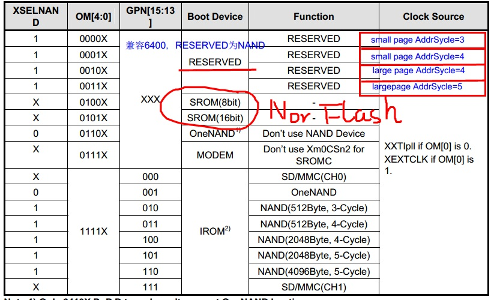
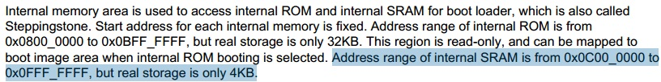

学的实在是揪心，一开始以为的8K每页读，才发现前4页为2K，但当以前4页2K读，后面8K读，又发现坑爹的来了，这个问题的引出主要是我读取内核并启动没有成功，然后基于这样的一个考虑，我以2K每页读取NandFlash，代码运行成功，我以8K每页读取NandFlash，代码运行一样成功，问题就在这里，如果这样考虑，代码到底是每页多少被写到NandFlash的？事实证明的是，这篇文章给了我答案，看来还真是。
以下文章转载自：Tiny6410+K9GAG08U0E
Tiny6410(K9GAG08U0E)使用小记
友善采用这颗8K Page的Nand，在6410上面搭配使用，确实给用户添加了不少麻烦，再加上ecc部分使用软件实现，代码不开源，学到块驱动的时候确实揪心啊~~
内部SRAM的大小
先从启动说起，Tiny6410启动选用的是用户手册里面屏蔽掉的一种直接Nand启动方式，如下图，根据友善原理图的OM[4:0]电平，对应表中的RESERVED，这种启动方式就是上电后直接将Nand的前面一部分代码映射到片内SRAM中，开始启动。

而三星官方推荐的启动方式应该是从IROM中启动，然后通过IROM将NAND中的代码拷贝到片内SRAM，再跳转到SRAM中启动。
这里看了网上很多资料，有的人说SRAM是8K，有的说是4K，这里我看到用户手册里面是说有4K，但是我用Tiny6410调试裸板程序的时候，发现确实是拷贝了8K代码：

这里自己有个猜测：对于友善使用的这种隐藏的启动方式，就是直接将代码放到SRAM空间运行，此时当然就有8K RAM空间了；但是当使用三星推荐的从IROM中运行，那么IROM中运行的代码的临时变量都是保存在SRAM上面的，所以可能是官方想保留上半4K RAM用于IROM启动。
8K页大小问题
从上面启动选择那张图片可以看到，其实上6410最大仅支持4K页，并不支持8K页，而对于友善使用的被保留启动方式更是最多支持large page(2K)。
所以在开始的8K SRAM代码拷贝中需要注意，系统只会拷贝每个8K页中的前2K数据，而友善配套提供的superboot升级程序在烧写U-boot镜像的时候都只是操作每页中前2K空间。
而对应的在U-Boot源码中也可以看到拷贝U-boot到SDRAM中运行的函数，仅操作了前2K数据：
1
2
3
4
5
6
7
8
9
10
11
12
13
| static int nandll_read_blocks (ulong dst_addr, ulong size, int large_block)
{
uchar *buf = (uchar *)dst_addr;
int i;
uint page_shift = 9;
if (large_block)
page_shift = 11;
for (i = 0; i < (0x3c000>>page_shift); i++, buf+=(1<<page_shift)) {
nandll_read_page(buf, i, large_block);
}
return 0;
}
|
可以看到在整个启动到U-boot代码搬运过程中，都没有启动ecc，所以在这个过程中数据都是不可靠的，而在友善的论坛里面也看到过他们承认，有掉U-boot固件的可能性。这也不能全怪人家，硬件决定6410拷贝8K代码的时候已经不安全了，那么后面Uboot重定向的时候做不做ecc都不是太重要了。。。
在进入U-boot第二阶段start_armboot中之后，通过调用nand_scan()跟友善不开源的NAND_Init()，从这里之后即对K9GAG08U0E完成初始化，开启软件ECC，此后对Kernel、Rootfs的数据操作都是变为可靠了。
这里再吐槽一下，调用NAND_Init()竟然会改变U-Boot的环境变量，搞的我每次通过mini6410.h文件设置的环境变量都无效，这也是醉了。。。P.S.经过验证，友善应该是在Nand上面开辟了一段空间用于保存环境变量，调用NAND_Init之后，系统将直接从Nand的这段地址中还原环境参数，也就是说修改/include/configs/mini6410.h下面的环境变量屁用都没有，对于一块全新的开发板只要在Uboot中调用一次setenv、saveenv，保存到Nand中，下次如果仅更新Uboot固件时，则不需要再重新设置环境变量了(确保你用的Uboot是最新版，旧版本Uboot命令行下不支持saveenv保存参数)。
推荐解决方法可以在NAND_Init()后面使用void setenv (char *varname, char *varvalue)重新设置。
Tiny6410中的nand命令
友善提供的最新U-Boot终于支持对K9GAG08U0E进行写入操作了，分析cmd_nand.c中的do_nand()：
1
2
3
4
5
6
7
8
9
10
11
12
13
14
15
16
17
18
19
20
21
22
23
24
25
26
27
28
29
30
31
32
33
34
35
36
37
38
39
40
41
42
43
44
45
46
47
48
49
50
51
52
53
54
55
56
57
58
59
60
61
62
63
64
65
66
67
68
69
70
71
72
73
74
75
76
77
78
79
80
81
82
83
84
85
86
87
88
|
if (strncmp(cmd, "read", 4) == 0 || strncmp(cmd, "write", 5) == 0) {
int read;
if (argc < 4)
goto usage;
addr = (ulong)simple_strtoul(argv[2], NULL, 16);
read = strncmp(cmd, "read", 4) == 0;
printf("\nNAND %s: ", read ? "read" : "write");
if (arg_off_size(argc - 3, argv + 3, nand, &off, &size) != 0)
return 1;
s = strchr(cmd, '.');
if (s != NULL &&
(!strcmp(s, ".jffs2") || !strcmp(s, ".e") || !strcmp(s, ".i"))) {
if (read) {
ret = FriendlyARMReadNand( (u_char*)addr, size, off);
if (ret == -1) {
puts("offset should be multiple of page size\n");
}
} else {
nand_write_options_t opts;
memset(&opts, 0, sizeof(opts));
opts.buffer = (u_char*) addr;
opts.length = size;
opts.offset = off;
opts.pad = 1;
opts.blockalign = 1;
opts.quiet = quiet;
if (NandIsMlc()) {
ret = -1;
puts("write.jffs2/write.e/write.i is not supported\n");
} else
ret = nand_write_opts(nand, &opts);
}
#ifdef CFG_NAND_YAFFS_WRITE
} else if (!read && s != NULL && + (!strcmp(s, ".yaffs") || !strcmp(s, ".yaffs1"))) {
nand_write_options_t opts;
memset(&opts, 0, sizeof(opts));
opts.buffer = (u_char*) addr;
opts.length = size;
opts.offset = off;
opts.pad = 0;
opts.blockalign = 1;
opts.quiet = quiet;
opts.writeoob = 1;
opts.autoplace = 1;
ret = nand_write_opts(nand, &opts);
#endif
} else {
if (read) {
if (!NandIsMlc()) {
ret = nand_read(nand, off, &size, (u_char *)addr);
} else {
ret = FriendlyARMReadNand( (u_char*)addr, size, off);
if (ret == -1) {
puts("offset should be multiple of page size\n");
}
}
} else {
if (NandIsMlc()) {
if (off % NandBlockSizeInByte != 0) {
puts("offset should be multiple of block size\n");
ret = -1;
} else {
unsigned int i;
ret = 0;
for (i = 0; i < size; i += NandBlockSizeInByte) {
int len = size - i;
if (len > NandBlockSizeInByte) {
len = NandBlockSizeInByte;
}
FriendlyARMWriteNand(((u_char *)addr) + i, len, off + i, NandBlockSizeInByte);
}
}
} else {
ret = nand_write(nand, off, &size, (u_char *)addr);
if (ret == 0) {
uint *magic = (uint*)(PHYS_SDRAM_1);
if ((0x24564236 == magic[0]) && (0x20764316 == magic[1]))
magic[0] = 0x27051956;
}
}
}
}
|
从代码可以看到，只有nand read.i == nand read可以完成K9GAG08U0E的读操作，且它们都要求操作地址必须是page对齐；
而nand write可以完成K9GAG08U0E的写操作，同样，操作地址需要page对齐(8K)，且暂时还不支持带oob数据的文件系统镜像的烧写(yaffs)！！
本文标题：Tiny6410 的NandFlash（K9GAG08U0E）
文章作者：小师
发布时间：2016-06-03
最后更新：2022-05-04
原始链接：chunlife.top/2016/06/03/Tiny6410 的NandFlash（K9GAG08U0E）/
版权声明：本站所有文章均采用知识共享署名4.0国际许可协议进行许可